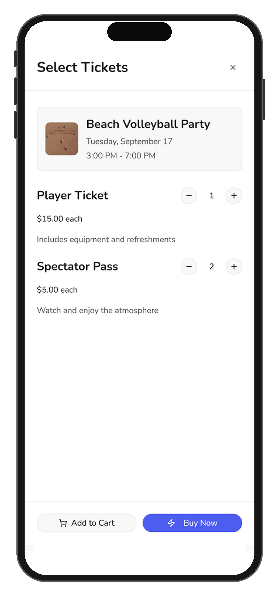
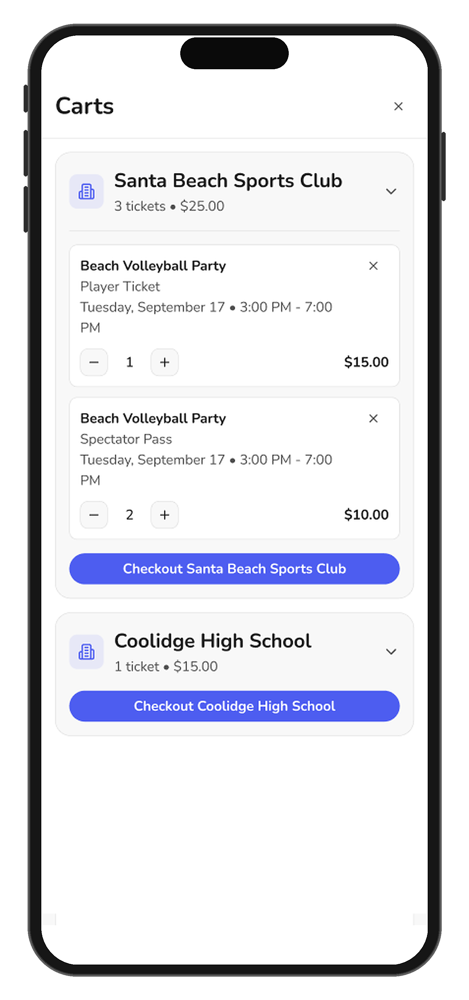
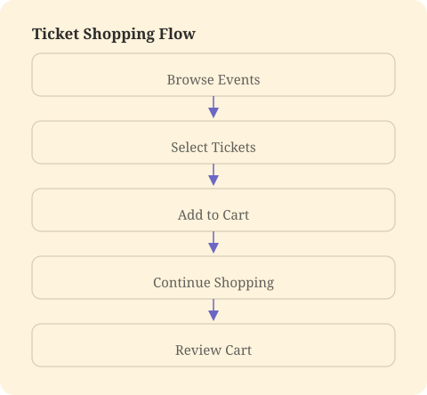
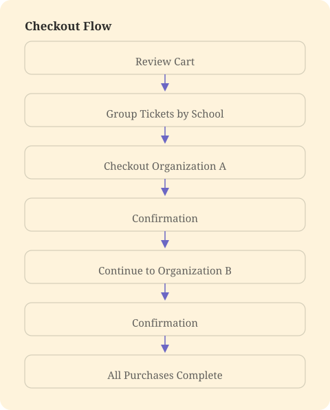
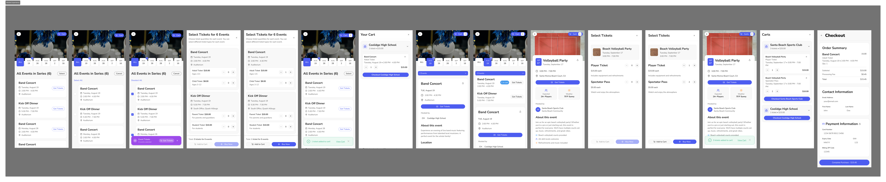
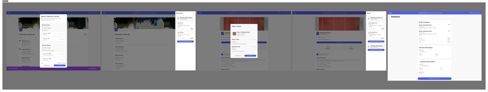

Cart & Checkout
Designed an intuitive Cart & Checkout experience that streamlined ticket purchases while supporting a complex multi-school ecosystem.


Overview
As Vega expanded into ticketing, families needed a simple way to purchase tickets for multiple student events. I designed a Cart & Checkout experience that streamlined the buying process while accommodating a complex multi-school ecosystem, where tickets from different schools could not be processed in a single transaction.
The result was an intuitive flow that reduced friction, clearly communicated purchase limitations, and made it easy for parents to complete multiple event purchases.
Problem
Vega's ticketing platform was originally designed around a single-event purchasing model. As ticket sales increased, research revealed that families often purchased tickets for multiple events at once, including events across different schools.
While users expected a familiar cart and checkout experience, Vega's payment architecture required each school to receive payments through separate transactions. The challenge was to create a unified shopping experience while respecting these technical and financial constraints.
Solution
I designed a Cart & Checkout experience that allows users to collect tickets from multiple events into a single cart while intelligently grouping purchases by organization during checkout.
Rather than exposing backend payment limitations, the experience guides users through a series of simple, connected transactions that feel like one continuous flow.
Process
Research & Discovery
As Vega expanded its ticketing platform, our team interviewed parents and school administrators to better understand purchasing behaviors. While we initially assumed users would buy tickets one event at a time, interviews revealed a much different workflow.
Key Insights
- Parents often purchase tickets for several events in one session.
- Families frequently have students attending multiple schools.
- Users wanted the flexibility to browse events before committing to checkout.
- Purchasing tickets individually created unnecessary friction and repeated payment steps.
These findings uncovered an opportunity to rethink the purchasing experience around how families actually plan and attend school events.
Opportunity
The obvious solution was to introduce a shopping cart, but implementing one introduced a unique challenge.
Because each school manages its own finances, tickets from different organizations could not be processed within a single payment transaction.
The design challenge became: How might we create the feeling of one checkout experience while processing multiple transactions behind the scenes?
User Flows
I mapped the purchasing journey to understand where users expected continuity and where system limitations required separate actions.


Rather than asking users to manually separate purchases, the system organized tickets automatically and guided them through each transaction with clear progress indicators.
Design & Iteration
The primary design goal was minimizing the visibility of technical complexity.
I explored ways to keep all selected tickets together in a single cart, clearly communicate why purchases were grouped by organization, maintain context between transactions so users never felt like they were starting over, and reduce repetitive actions during multi-school purchases.
Throughout the design process, I prioritized transparency over surprise, ensuring users always understood what was happening and what step came next.


Outcome
The final experience transformed Vega's ticket purchasing workflow from a single-event transaction into a flexible, family-centered shopping experience.
Users could browse and save tickets across multiple events before checking out, while the system seamlessly handled separate organization payments behind the scenes.
This project reinforced that great UX is not about removing every technical constraint, it is about designing experiences that keep those constraints invisible whenever possible.